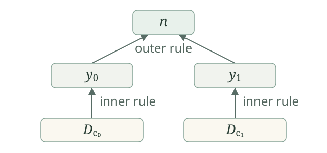

Suppose members of a set arrive over time. Seeing the numbers \(1,4\) can justify a conclusion that needs both of them. Waiting without seeing \(6\) does not justify the conclusion that \(6\) is absent. We develop reductions that use the first kind of information, for arbitrary subsets of \(\mathbb N\).
Use the existing natural-number codes of finite lists. Let \(L_d\) be the list decoded from \(d\), and put \(D_d=\{x:x\text{ occurs in }L_d\}\). Every finite subset has such a code; repetitions and order do not affect \(D_d\). The empty-list code \(0\) gives \(D_0=\varnothing\), and it is the only code whose decoded list has no entries. Write \(\operatorname{sing}(x)\) for the code of \([x]\).
Finite membership tests, lengths, entries, and concatenation are computable, with the numerical code operations primitive recursive by bounded list folds. A rule relation \(R(n,d)\) is jointly c.e.: one program recognizes the coded set \(\{\langle n,d\rangle:R(n,d)\}\). The rule says that seeing all of \(D_d\) permits outputting \(n\). Empty evidence is allowed.
The enumeration operator represented by \(R\) is
Its input and output are sets, not single-valued partial numerical functions. Several rules may output different numbers on the same evidence, and all those numbers belong to the output set. Thus the coherence condition used for partial-function operators is not imposed here. The common feature is finite positive evidence.
Fix the existing enumeration of c.e. sets \(W_e\). Put \(R_e(n,d)\iff\langle n,d\rangle\in W_e\) and abbreviate \(\Theta_{R_e}\) by \(\Theta_e\). Every jointly c.e. rule relation has an index in this form. The formula defines \(\Theta_e(B)\) even when \(B\) is noncomputable. It does not give an ordinary algorithm a finite description of every such \(B\).
For every enumeration operator,
A successful rule remains successful when the input set is enlarged. This proves monotonicity. For the forward finite-evidence implication, take \(F=D_d\) from a successful rule. The same rule applies to \(F\) itself. For the reverse implication, use monotonicity from \(F\) to \(B\).
This is the set version of finite positive information. It asserts stability of an output that has appeared. It gives no finite certificate that an output will never appear.
If \(B\) is c.e., then \(\Theta_e(B)\) is c.e., uniformly from indices for \(e\) and \(B\).
Take the increasing computable finite stages \(B_t\) of the supplied input enumeration. At stage \(t\), output every \(n<t\) for which some \(d<t\) satisfies
This is a finite computable test. Every number produced has a valid rule and true input evidence. Conversely, for a successful rule, its code eventually appears in \(W_{e,t}\), and all the finitely many members of \(D_d\) eventually appear together in \(B_t\). Choose a later stage also larger than \(n,d\). The procedure then outputs \(n\). Empty evidence passes immediately, including when the input is empty.
One may also feed these rules a presentation of an arbitrary input set by finite positive observations. At each step, test rules seen so far against observations received so far. Provided every input member eventually appears, every successful finite witness is eventually recognized. Presentations may repeat numbers or pause; no total function onto the empty set is required.
Write \(A\le_e B\), and say that \(A\) is enumeration reducible to \(B\), when \(A=\Theta_e(B)\) for some index \(e\). The rule family is fixed before individual output numbers and their finite witnesses vary. It works from positive information about \(B\), without asking whether some number fails to belong to \(B\).
The identity operator has the decidable rules \(I(n,d)\iff d=\operatorname{sing}(n)\). Its output on every \(B\) is exactly \(B\), so \(B\le_e B\). The next construction supplies transitivity, with one effective compiler for the composed rule family.
Suppose an outer relation \(R\) needs \(D_d\), whose decoded list is \([y_0,\ldots,y_{k-1}]\). To obtain that evidence from an inner operator \(\Theta_S\), choose an \(S\)-rule \(S(y_i,c_i)\) for each listed occurrence. Their combined input requirement is
Make this numerical. For a list code \(w\) decoding to \([c_0,\ldots,c_{k-1}]\), let \(U(w)\) code the concatenated list \(L_{c_0}\mathbin{\smallfrown}\cdots\mathbin{\smallfrown}L_{c_{k-1}}\). In particular \(U(0)=0\). This is a specified primitive-recursive fold of list concatenation, and its underlying set is the displayed union.
Define the composite rule relation \(C_{R,S}(n,c)\) by the existence of \(d,w\) such that \(R(n,d)\), the lists \(L_d,L_w\) have the same length, \(S(L_d[i],L_w[i])\) holds at every position, and \(c=U(w)\) identifies the combined evidence code. Repeated intermediate requirements are harmless. If the outer rule has empty evidence, take \(w=0\), so the composite rule also has empty evidence.

There is a fixed primitive-recursive index map \(\kappa(r,s)\) such that, for every \(r,s\) and every \(B\subseteq\mathbb N\),
First recognize the composite relation \(C_{R_r,R_s}\) uniformly on the input pair \(n,c\). Search codes of triples \((d,w,t)\). Test equal list lengths, \(c=U(w)\), membership \(\langle n,d\rangle\in W_{r,t}\), and membership \(\langle L_d[i],L_w[i]\rangle\in W_{s,t}\) at every listed position. Each test is primitive recursive, using finite-stage tests and bounded list folds. If it succeeds, halt with output zero.
A successful test certifies exactly a composite rule. Conversely, the finitely many c.e. facts in any composite rule appear together at some common stage \(t\), so the search eventually halts. One ordinary program index \(v\), fixed before \(r,s,n,c\) vary, implements this search on input \(\langle r,\langle s,\langle n,c\rangle\rangle\rangle\). If \(\sigma\) denotes the existing specialization map, set
Its domain recognizes the required coded relation, and \(\kappa\) is primitive recursive jointly in the two indices.
If a composite rule applies to \(B\), each inner witness lies in \(B\), so every required \(y_i\) lies in \(\Theta_s(B)\). The outer rule gives \(n\in\Theta_r(\Theta_s(B))\). Conversely, take an outer successful rule. Choose a successful inner rule for each of its finitely many listed requirements, with every chosen evidence set included in \(B\). Code this finite list of witnesses by \(w\). The concatenation has underlying set contained in \(B\), giving a successful composite rule. When the outer list is empty, this argument uses the empty list of choices. Both inclusions follow for the same compiler and every \(B\).
For arbitrary subsets \(A,B,C\subseteq\mathbb N\),
The identity rules prove reflexivity. For transitivity, choose indices \(r,s\) with \(A=\Theta_r(B)\) and \(B=\Theta_s(C)\). The actual compiler gives \(A=\Theta_{\kappa(r,s)}(C)\). No membership test for the intermediate set \(B\) was introduced: its finite positive requirements were replaced by finite covers from \(C\).
For every \(A\subseteq\mathbb N\),
Moreover, every c.e. set is enumeration reducible to every input set.
If \(A=\Theta_R(\varnothing)\), its only possible evidence is empty, so \(A=\{n:R(n,0)\}\). This is a computable section of a jointly c.e. relation and is c.e. Conversely, for c.e. \(A\), use \(R(n,d)\iff n\in A\text{ and }d=0\). These rules give \(\Theta_R(B)=A\) for every \(B\), since the empty requirement is always satisfied. Taking \(A=\varnothing\) gives an operator with no rules, so \(\varnothing\le_e B\) for every \(B\) too.
Thus all finite sets, including the empty set, have the least enumeration degree. It also contains noncomputable c.e. sets. This differs from the least Turing degree, whose members are exactly the computable sets.
Use the same tagged join
Then \(A\le_e A\oplus B\), \(B\le_e A\oplus B\), and
To output \(n\) for the left projection require the singleton \(\{2n\}\); for the right projection require \(\{2n+1\}\). Both rule relations are decidable. If \(A=\Theta_R(C)\) and \(B=\Theta_S(C)\), combine the relations by allowing output \(2n\) on \(d\) exactly when \(R(n,d)\), and output \(2n+1\) exactly when \(S(n,d)\). Parity and division by two are computable, so this is one jointly c.e. relation with output \(A\oplus B\). Conversely, compose a reduction of the join to \(C\) with each projection. This proves the equivalence, including empty components.
Define \(A\equiv_e B\) when \(A\le_e B\) and \(B\le_e A\). An enumeration degree is an equivalence class \([A]_e\). Define \([A]_e\le[B]_e\) by \(A\le_e B\).
Reflexivity and transitivity make \(\equiv_e\) an equivalence relation. If representatives change within their classes, composing in both directions shows that the order is unchanged. Mutual comparison of classes makes them equal, so the quotient order is a partial order, just as in the Turing-degree construction. Its least element is \(\mathbf0_e=[\varnothing]_e\), with exactly the c.e. representatives.
The join theorem makes \([A]_e\vee[B]_e=[A\oplus B]_e\) independent of representatives and a least upper bound. Indeed, reductions from \(A,B\) to a changed join combine by that theorem; the reverse reductions give equivalence. The familiar idempotent, commutative, associative and least-element identities follow from uniqueness of least upper bounds.
For \(A\subseteq\mathbb N\), define its total-information set
Thus \(2q\in T(A)\) says \(q\in A\), and \(2q+1\in T(A)\) says \(q\notin A\). Exactly one of each pair belongs. To write both answers uniformly, put \(\operatorname{tag}(q,1)=2q\) and \(\operatorname{tag}(q,0)=2q+1\).
Let \(\tau\) be a finite oracle-answer list with entries \((q_i,b_i)\), where each answer is a bit. Write \(k\) for its length, and index its entries from zero. Put \(F_\tau=\{\operatorname{tag}(q_i,b_i):i<k\}\). Then
This follows at each position from the two tag definitions. Repeated queries cause no difficulty. Inconsistent answers to the same query put both tags into \(F_\tau\), so that evidence cannot be included in any \(T(A)\). Unlike an unrecorded absence, a recorded negative answer has become a positive member with its own tag.
For each finite oracle program \(c\), there is a uniformly c.e. relation \(R^c\) with the following rules: a successful finite derivation on input \(x\), with output bit \(b\) and answer record \(\tau\), permits output \(\operatorname{tag}(x,b)\) on evidence \(F_\tau\). Here the answers in a proposed derivation are supplied bits, not calls to an unknown oracle.
We explain how to recognize these finite certificates without an oracle. Code the finite program tree and a candidate derivation by the existing list and pair codes. A derivation can be written as a finite list of node records, with every child referred to by an earlier position. Each record gives its subprogram, input, output, rule, and child positions. The last record must concern \(c\) at input \(x\). Check that every other record is used exactly once as a child and that the last is never a child. Together with the earlier-child condition, these checks make the records one finite tree, with no unused query records.
Check ordinary leaves against their specified arithmetic outputs. A query leaf may supply either bit and records that query and answer. A pair node checks the two child programs, their common input, and their paired output. A composition node checks that the inner output is the outer input and that the parent output is the outer output. A recursion node checks its base child and the finite step list, including all successive step inputs and outputs. A search node checks its finite consecutive tests: all earlier outputs must be positive, the last output zero, and the returned value their absolute stopping index. These are precisely the existing oracle evaluation rules.
All child positions are bounded by the current record position. Lengths, entries, program tags and arithmetic equalities are checked by bounded list folds, so the whole finite check and extraction of all query answers are primitive recursive. Induction over accepted records builds successful derivations for their stated outputs whenever those recorded bits agree with an oracle. Conversely, put any actual finite successful derivation in child-before-parent order; it passes the checks and supplies its recorded evidence.
Recognize \(R^c(n,d)\) by searching candidate certificates whose final output is a bit, with \(n\) its tagged input and \(d\) the code of its extracted evidence list. Halt with zero on the first accepted certificate. One fixed ordinary recognizer handles the finite program code as a parameter; specialization gives the fixed index constructor \(\eta(c)=\sigma(v_{\mathrm{tr}},\ulcorner c\urcorner)\), where \(v_{\mathrm{tr}}\) is that recognizer and \(\ulcorner c\urcorner\) the finite program code. This map is primitive recursive in the program code. The relation is joint in both numerical arguments. Its program is chosen once, rather than separately at each input. For a certificate with no queries its evidence code is zero.
If the actual oracle program \(c\) satisfies \(E_B(c,x)\downarrow=\chi_A(x)\) for every \(x\), then the transcript rules just constructed satisfy
A rule triggered by \(T(B)\) has every recorded answer correct for \(B\), by the tag equivalence. The finite certificate therefore gives an actual successful evaluation of \(c\) with \(B\). Its output bit is \(\chi_A(x)\), so its tagged output belongs to \(T(A)\). This proves one inclusion.
Conversely, take \(\operatorname{tag}(x,\chi_A(x))\in T(A)\). The reduction halts at \(x\), so its successful finite computation supplies a certificate and a finite record consistent with \(B\). Its evidence is included in \(T(B)\), and the corresponding rule outputs the desired tag. This proves the other inclusion. The same relation works at every input, and its construction from \(c\) does not depend on \(A\) or \(B\).
If \(\Theta_e(T(B))=T(A)\), one fixed oracle program compiled from \(e\) computes \(\chi_A\) with oracle \(B\).
On input \(x\), search coded candidates with a bit \(b\), witness code \(d\), and stage \(t\). Test
The first test is an ordinary finite-stage computation. For each entry \(z\) of \(L_d\), decode its parity and quotient. If \(z=2q\), ask whether \(q\in B\); if \(z=2q+1\), ask whether \(q\notin B\). The oracle answers either question after one query and a possible bit reversal. A finite list fold checks all entries. Thus each candidate test terminates, even when its witness fails.
Return the bit of the first successful candidate. The procedure is a genuine oracle program: ordinary pairing, stage tests and bounded folds are available; finite oracle-query loops use primitive recursion; searching candidate codes uses the sequential search constructor, with a total zero test exactly at successful candidates. More explicitly, fix one such program \(P\) taking input \(\langle e,x\rangle\). Let \(K_e\) be the ordinary finite program \(x\mapsto\langle e,x\rangle\), built by pairing the constant-\(e\) program with the identity. Constants are built by iterating successor, so their finite program codes are computable from \(e\). Using the ordinary-program embedding \(\iota\), define the actual compiler
This is a computable construction of finite oracle programs, fixed before \(B\) varies. For every \(x\), exactly one output tag belongs to \(T(A)\). By the assumed operator equality it has some finite successful witness, whose rule appears at a finite stage. The search therefore terminates. Every successful candidate yields a tag in \(T(A)\), so its bit is \(\chi_A(x)\). Two conflicting successes cannot occur. This proves totality and correctness, rather than only a recognizer for positive answers.
For arbitrary \(A,B\subseteq\mathbb N\),
Consequently \([A]_T\mapsto[T(A)]_e\) is a well-defined injective order-preserving and order-reflecting map from Turing degrees into enumeration degrees.
The two preceding constructions prove the equivalence with actual programs and actual rule families. Apply it in both directions to see that Turing-equivalent sets have enumeration-equivalent total-information sets. This makes the map on degrees well defined. If its values are equal, the equivalence yields both Turing reductions, hence equality of the original degrees. Applying it once gives preservation and reflection of order.
The embedding also preserves the least degree and binary joins. If \(A\) is computable, both halves of \(T(A)\) are computable, so its enumeration degree is \(\mathbf0_e\). For joins, the computable permutation that exchanges \(4n+1\) with \(4n+2\) and fixes \(4n,4n+3\) sends \(T(A\oplus B)\) onto \(T(A)\oplus T(B)\). A computable permutation \(h\) induces an enumeration operator with singleton rules sending input evidence \(\{x\}\) to output \(h(x)\); its computable inverse gives the reverse reduction. Thus the two joins are enumeration equivalent.
The adopted operator definition and total-information embedding statement are from Montalbán's Computable Structure Theory, printed p.xvii. The proofs here use finite covers and finite oracle certificates. No characterization involving separately chosen reductions for different presentations is needed.
Is there one enumeration operator with \(\Theta(B)=\overline B\) for every \(B\)? Even without such an operator, must \(\overline B\le_e B\) hold separately for every \(B\)?
Neither assertion holds. A single complement operator would violate monotonicity: \(\varnothing\subseteq\{0\}\), but \(0\in\overline\varnothing\) and \(0\notin\overline{\{0\}}\). This rules out one operator acting as complement on all inputs; it does not by itself settle the separate reducibility question for each fixed set.
For that stronger question choose the noncomputable c.e. halting set \(K\). Its complement is not c.e., since a set and its complement both c.e. would make the set computable by running the two searches. Every enumeration operator sends the c.e. input \(K\) to a c.e. output, so \(\overline K\not\le_e K\). In contrast, \(\overline K\le_T K\): a membership oracle can reverse its answer.
Nevertheless \(K\equiv_e\varnothing\), because both are c.e. This demonstrates why the degree embedding uses \(T(K)\), rather than sending the Turing degree of \(K\) to the enumeration degree of \(K\) itself. In fact \(\overline K\equiv_e T(K)\): the complement is a projection of that join, while \(K\le_e\overline K\) by the c.e. bottom theorem and the join property gives the reverse reduction.
Let the inner relation have exactly the rules with output \(2\) on empty evidence and output \(5\) on evidence \(\{1,4\}\). Let the outer relation have exactly the rule with output \(7\) on evidence \(\{2,5\}\). Compute the composite on an arbitrary input \(B\). What if the outer rule instead has empty evidence?
The inner output always contains \(2\), and contains \(5\) exactly when \(\{1,4\}\subseteq B\). Thus the composite is \(\{7\}\) when both \(1,4\) belong to \(B\), and is empty otherwise. The finite-cover construction combines the two inner requirements as \(\varnothing\cup\{1,4\}=\{1,4\}\). The empty requirement contributes no input obligation, rather than blocking the rule.
If the outer rule outputs \(7\) on empty evidence, it needs no intermediate outputs at all. Its composite uses the empty list of inner witnesses and has empty evidence. The output is then \(\{7\}\) for every \(B\), even if the inner operator has no rules. Excluding empty witnesses would lose these constant operators and the c.e. bottom theorem.